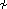
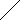

Anhang zu: DIFFERENZIALGLEICHUNGEN
VARIATION DER KONSTANTEN PARTIKULÄRE/ALLGEMEINE LÖSUNG?
Der Ansatz à la homogene Lösung ist kein Ansatz, bei dem ein bestimmter Lösungstyp vermutet wird, sondern jede Funktion ist so darstellbar. Die Berücksichtigung der Integrationskonstanten ergibt daher die allgemeine Lösung. Am Beispiel der linearen DG 2. Ordnung:
Zu beliebigen (differenzierbaren) Funktionen y(x), y1(x), y2(x) mit y1  y2 finden wir c1(x), c2(x), sodass:
(i) y = c1(x)y1 + c2(x)y2 mit c1'(x)y1 + c2'(x)y2 = 0
Zum Beweis differenzieren wir (i), erhalten
(ii) y' = c1(x)y1' + c2(x)y2'
und lösen (i) und (ii) über die Cramer'sche Regel auf:
SINUSFÖRMIGE STÖRFUNKTION KOMPLEX GERECHNET?
Eine Störfunktion rsinωt können wir als Imaginärteil von rejωt ansehen und analog dazu die folgende reelle DG als Imaginärteil einer komplexen DG:
Aufgabe: Finde eine partikuläre Lösung der DG: y" + py' + qy = rsinωt
Ansatz à la Störfunktion: zp = Aejωt z" + pz' + qz = rejωt
-ω
2Ae
jωt + jωp
Ae
jωt + q
Ae
jωt = re
jωt A =
=
r(q – ω2 – jωp)
(q – ω2)2 + (ωp)2
zp = (ReA + jImA)(cosωt + jsinωt) yp = Imzp = ImAcosωt + ReAsinωt